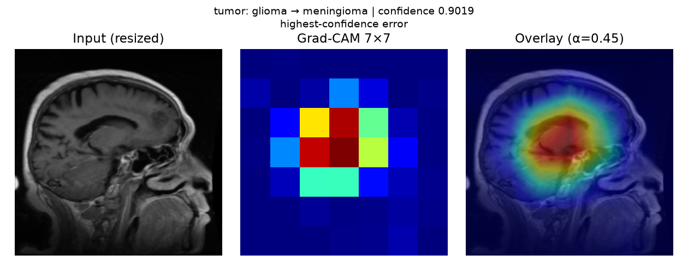
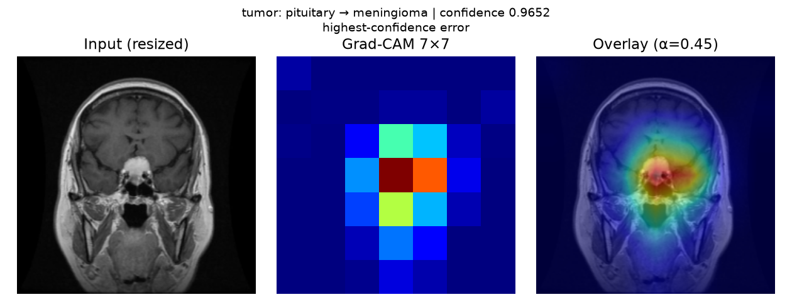
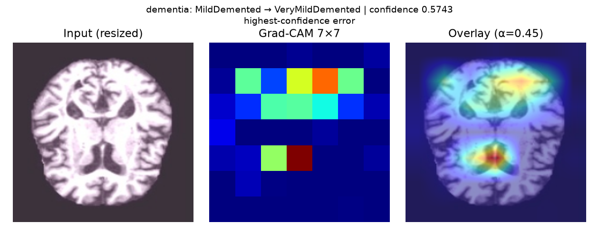
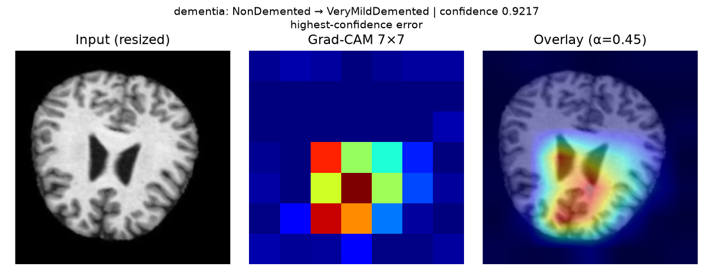
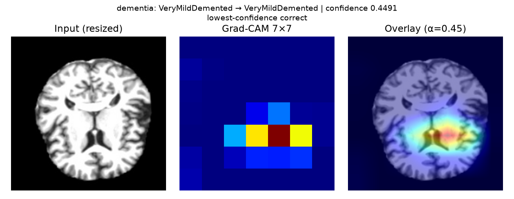

tumor: glioma → glioma | confidence 0.4282
lowest-confidence correct

data/brain_tumor/Testing/glioma/Te-gl_0081.jpgInternal public-dataset benchmark. Exploratory model attribution, not validated anatomical localization or clinical evidence. Softmax scores are model confidence, not calibrated clinical probabilities.
Each class contributes its lowest-confidence correct image and, when present, highest-confidence error in the archived strict-test predictions. Classes with no errors have no error panel. This purposive gallery is separate from the seeded quantitative sample.
Quantitative summary · Per-image evidence · Provenance
lowest-confidence correct
data/brain_tumor/Testing/glioma/Te-gl_0081.jpghighest-confidence error

data/brain_tumor/Testing/glioma/Te-gl_0265.jpglowest-confidence correct

data/brain_tumor/Testing/meningioma/Te-me_0045.jpghighest-confidence error

data/brain_tumor/Testing/meningioma/Te-me_0111.jpglowest-confidence correct

data/brain_tumor/Testing/notumor/Te-no_0104.jpghighest-confidence error

data/brain_tumor/Testing/notumor/Te-no_0400.jpghighest-confidence error

data/brain_tumor/Testing/pituitary/Te-piTr_0002.jpglowest-confidence correct

data/brain_tumor/Testing/pituitary/Te-pi_0029.jpglowest-confidence correct

data/alzheimers/MildDemented/aug_9891_mildDem644.jpghighest-confidence error

data/alzheimers/MildDemented/ec212624-f1cf-4316-8433-f4a62b827adb.jpglowest-confidence correct

data/alzheimers/ModerateDemented/aug_8520_336ed5a5-4a2d-4a4a-8a6d-47693e9a3b2c.jpglowest-confidence correct

data/alzheimers/NonDemented/8b9a2e6d-8710-43d7-add2-c7935e1dce20.jpghighest-confidence error

data/alzheimers/NonDemented/93df02eb-96a3-4bb5-b577-df68a585016e.jpglowest-confidence correct

data/alzheimers/VeryMildDemented/6ada706b-871d-454a-88a6-c4573f0490e2.jpghighest-confidence error

data/alzheimers/VeryMildDemented/d1224174-8b19-4621-b8ac-bf52b21e4b29.jpg